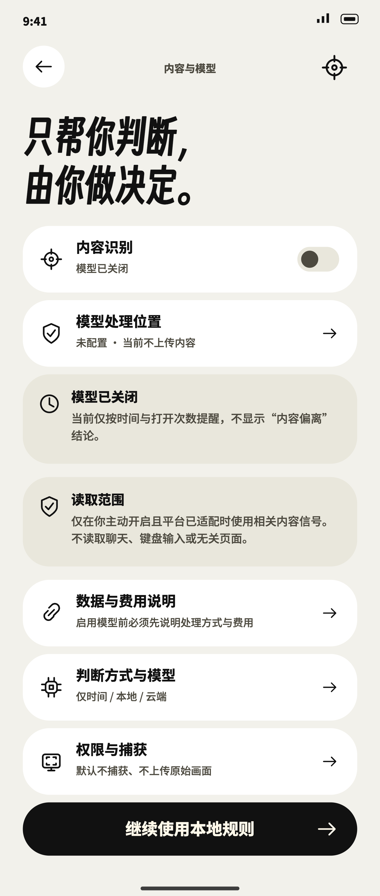

1.32.1版本名
80版本号
64.6 MBQA 包大小
S25 已过真机验收
下载
已装旧内测包可直接覆盖。也可以在 App 里：我的 → 许可与版本 → 检查更新。
直接下载 APKSHA-256: 1540b0eef3ff5988ed45cb310e850d40a3ec7ab4d5cf21690e6b2754ccebf954
使用说明
- 安装并开权限
系统 无障碍 开启「你又刷了」；建议再开 悬浮窗。
- 建一条主线
今天 → 主线；可用范围库四模板，设预计时长（时间盒）。
- 内容判断
设备能力 → 内容识别 + 模型 API（不配也能测浮窗与计时）。
- 刷 feed 规则
我的 → 主线介入：默认前 10 分钟静默；微信聊天不介入。
- 偏离时
问「还在这次主线上吗？」；可看 5 / 10 / 20 分钟或现在休息。
界面一览
两排三列 · 均为中文浅色界面（第五张为 S25 真机偏离浮窗）。



建议测什么
| 项 | 预期 |
|---|---|
| 浮窗四角 | 测试小浮窗：白卡四角无尖角虚影 |
| 前 10 分钟 | 抖音 + 小红书合并静默 |
| 离题弹窗 | 还在这次主线上吗？ · 5/10/20 |
| 微信 | 聊天不介入；视频号才可能 |